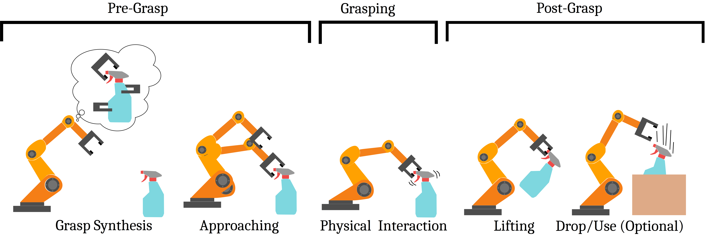
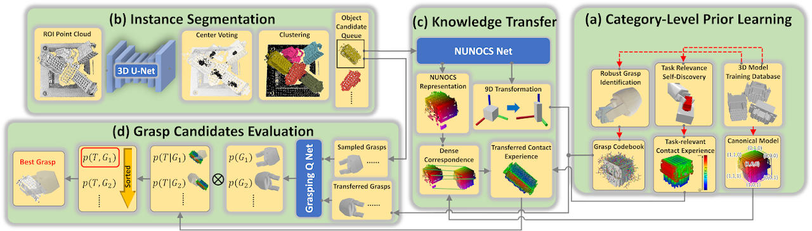
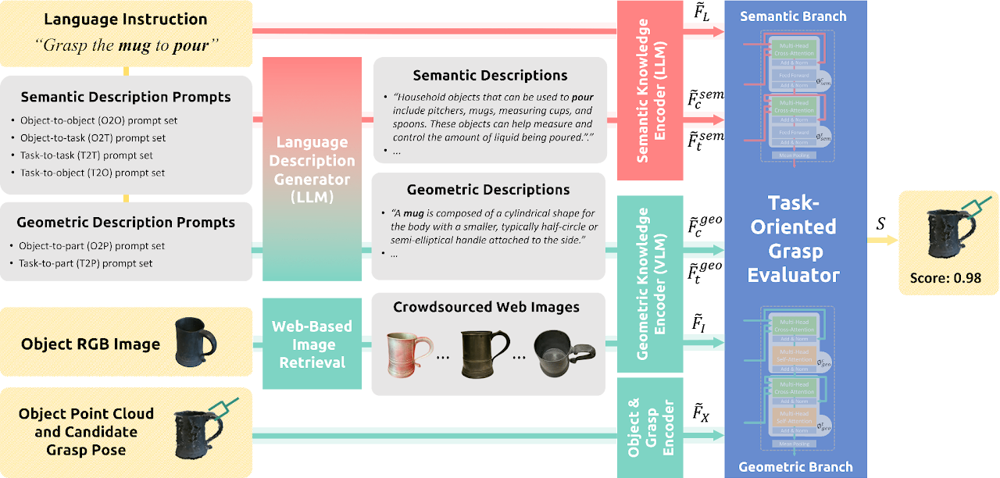

Robotic grasping is a fundamental capability in manufacturing, healthcare, and domestic environments, enabling robots to manipulate objects efficiently and autonomously. This paper focuses on task-oriented grasping (TOG) in six degrees of freedom, which improves accuracy and translatability to real-world applications. We aim to contribute to the ongoing development of TOG by identifying challenges, evaluation metrics, describing two TOG approaches, and suggesting future research directions towards fully autonomous robotic task execution.

Image adapted from Newburry et al.
First, Grasp Synthesis find one or multiple high-quality grasps based on criterias such as grasp stability, reliability, gripper geometry and kinematics.
Then, Grasp Planning generates a trajectory for the robot to execute the grasp while avoiding collisions. Second, the planned trajectory and grasp are executed. The gripper applies forces and torques to a set of contact points on the object.
Finally, the object is lifted and used for the next task.


@misc{banning_grasp-planning_2024,
author = {Banning, Ole},
title = {Grasp Planning for Robotic Manipulation in 6-DoF},
school = {Technical University of Munich},
year = {2024},
type = {Seminar Paper},
}